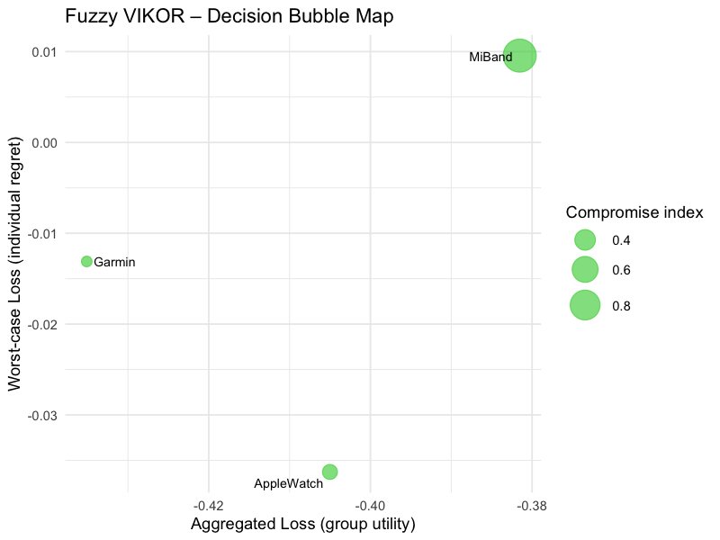
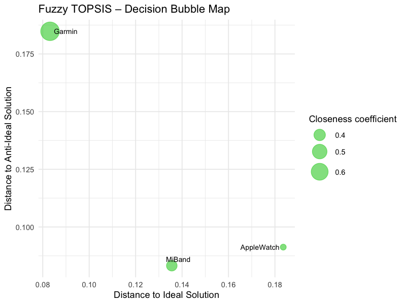
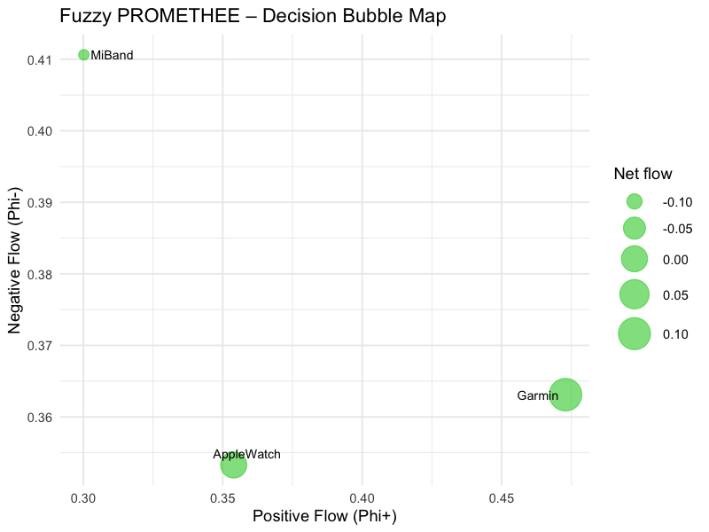

Sekcja 1
FitTrackR: na czym polega pakiet?
Pakiet FitTrackR został opracowany w celu wspierania wyboru urządzeń typu wearable, takich jak smartwatche i opaski fitness. Rynek tych urządzeń rozwija się bardzo dynamicznie, przez co użytkownicy mają do dyspozycji wiele modeli różniących się ceną, funkcjami zdrowotnymi, czasem pracy baterii, kompatybilnością czy dokładnością pomiarów. Porównanie wszystkich tych cech jednocześnie jest trudne, ponieważ poszczególne urządzenia oferują przewagę jedynie w wybranych aspektach.
Pakiet stosuje metody rozmytej wielokryterialnej analizy decyzyjnej (Fuzzy MCDA), które uwzględniają niepewność danych oraz subiektywne preferencje użytkownika. Wynikiem jest ranking urządzeń wskazujący modele najlepiej dopasowane do potrzeb różnych grup użytkowników.
Problem
Wybór najlepszego urządzenia wearable spośród wielu modeli (Apple Watch, Garmin, MiBand) przy uwzględnieniu 7 kryteriów jednocześnie: dokładność, bateria, funkcjonalność, kompatybilność, komfort, odporność i cena.
Użytkownik
Osoby planujące zakup smartwatcha lub opaski fitness, recenzenci technologiczni, studenci i badacze wykorzystujący metody wielokryterialnego wspomagania decyzji.
Wynik
Najlepszą alternatywą według meta-rankingu jest Garmin (rank = 1 we wszystkich trzech metodach). Drugie miejsce zajmuje Apple Watch, trzecie MiBand.
Sekcja 2
Dane wejściowe
W analizie wykorzystano symulowany zbiór danych mcda_dane_surowe
zawierający oceny 15 ekspertów dla 3 alternatyw (urządzeń wearable) według 7 kryteriów.
Dane generowane są proceduralnie z ustalonym ziarnem losowości (set.seed(123)),
co zapewnia pełną odtwarzalność analizy.
Kryteria Dokladnosc, Bateria, Funkcjonalnosc, Kompatybilnosc, Komfort, Odpornosc są typu max
(wyższa wartość = lepiej), natomiast kryterium Cena jest typu min
(niższa cena = lepiej).
| Alternatywa | Dokładność | Bateria | Funkcjonalność | Kompatybilność | Komfort | Odporność | Cena (PLN) |
|---|---|---|---|---|---|---|---|
| Apple Watch | śr. skali 1–10 | śr. skali 1–7 | śr. skali 1–7 | śr. skali 1–7 | śr. skali 1–7 | śr. skali 1–7 | 1800–2500 |
| Garmin ★ | śr. skali 1–10 | śr. skali 1–7 | śr. skali 1–7 | śr. skali 1–7 | śr. skali 1–7 | śr. skali 1–7 | 900–1800 |
| MiBand | śr. skali 1–10 | śr. skali 1–7 | śr. skali 1–7 | śr. skali 1–7 | śr. skali 1–7 | śr. skali 1–7 | 150–300 |
Oceny ekspertów są agregowane (średnia z 15 ocen na alternatywę), skalowane do skali Saaty'ego (1–9), a następnie rozmywane do postaci Trójkątnych Liczb Rozmytych, TFN = (x−1, x, x+1).
skladnia <- "
Dokladnosc =~ Tetno_Dokladnosc + Kroki_Dokladnosc + Kalorie_Dokladnosc;
Bateria =~ Bateria_Wydajnosc;
Funkcjonalnosc =~ Funkcje_Zdrowotne + Funkcje_Sportowe + Funkcje_Smart;
Kompatybilnosc =~ Kompatybilnosc_Android + Kompatybilnosc_iOS;
Komfort =~ Wygoda_Noszenia + Jakosc_Wykonania;
Odpornosc =~ Wodoodpornosc + Wytrzymalosc;
Cena =~ Cena_PLN
"
Sekcja 3
Rozmywanie danych (Fuzzification)
Każda ocena nie jest traktowana jako dokładna wartość — opinie ekspertów zawsze zawierają pewien poziom niepewności.
Zamiast jednej liczby stosujemy trójkątną liczbę rozmytą
à = (l, m, u), czyli zakres możliwych wartości.
Przykład: jeśli urządzenie otrzymało ocenę 6, to w analizie reprezentowane jest jako:
TFN = (5, 6, 7)
Defuzzyfikacja (zamiana z powrotem na liczbę) wzorem Changa:
x_crisp = (l + 4m + u) / 6
Waga 4 dla wartości modalnej m wynika z jej wyższej wiarygodności jako oceny centralnej.
Sekcja 4
Wagi kryteriów — metoda BWM
Wagi kryteriów wyznaczono metodą Best-Worst Method (BWM) — podejściem subiektywnym,
które wymaga od eksperta wskazania najważniejszego i najmniej ważnego kryterium,
a następnie porównania ich z pozostałymi. Na tej podstawie rozwiązywany jest problem optymalizacyjny
(biblioteka Rglpk).
# Najważniejsze: Dokładność (1), Najgorsze: Cena (9)
bwm_best <- c(1, 3, 4, 5, 6, 7, 9) # Dokladnosc nad innymi
bwm_worst <- c(9, 7, 6, 5, 4, 3, 1) # inne nad Cena
# Wyznaczone wagi BWM:
# Dokladnosc: 0.4137
# Bateria: 0.1679
# Funkcjonalnosc: 0.1259
# Kompatybilnosc: 0.1007
# Komfort: 0.0839
# Odpornosc: 0.0719
# Cena: 0.0360
Sekcja 5
Ranking główny i meta-ranking
Analiza opiera się na metodzie głównej VIKOR, która wyznacza rozwiązanie kompromisowe uwzględniające zarówno ogólną jakość alternatywy, jak i jej najgorszy wynik w poszczególnych kryteriach. Wyniki porównano z metodami TOPSIS i PROMETHEE II, które opierają się na innych zasadach agregacji preferencji.
Najlepsza alternatywa
Garmin
rank = 1 we wszystkich 3 metodach
Stabilność rankingu
Wysoka
VIKOR, TOPSIS i PROMETHEE II zgodne
| Alternatywa | VIKOR | TOPSIS | PROMETHEE | Meta-ranking |
|---|---|---|---|---|
| Garmin ★ | 1 | 1 | 1 | 1 |
| Apple Watch | 2 | 3 | 2 | 2 |
| MiBand | 3 | 2 | 3 | 3 |
Fuzzy VIKOR — mapa decyzyjna

Oś X: zagregowana strata (S), Oś Y: indywidualny żal (R). Rozmiar bąbelka = wskaźnik kompromisu Q. Im niżej i bardziej w lewo, tym lepiej.
Fuzzy TOPSIS — mapa decyzyjna

Oś X: odległość od ideału (D+), Oś Y: odległość od anty-ideału (D−). Rozmiar bąbelka = współczynnik bliskości C. Im wyżej i bardziej w lewo, tym lepiej.
Fuzzy PROMETHEE II — mapa decyzyjna

Oś X: przepływ pozytywny (Φ+), Oś Y: przepływ negatywny (Φ−). Rozmiar bąbelka = przepływ netto Φ. Im wyżej i bardziej w prawo, tym lepiej.
Sekcja 6
Jak odtworzyć analizę
Poniższy kod pozwala zainstalować pakiet, uruchomić przykład i sprawdzić czy wyniki ze strony rzeczywiście pochodzą z kodu.
Dane są generowane deterministycznie (set.seed(123)),
więc wyniki będą identyczne na każdym komputerze.
# 1. Instalacja
devtools::install_github("julmilos/FitTrackR")
library(FitTrackR)
# 2. Dane
data("mcda_dane_surowe")
# 3. Składnia modelu i przygotowanie macierzy rozmytej
skladnia <- "
Dokladnosc =~ Tetno_Dokladnosc + Kroki_Dokladnosc + Kalorie_Dokladnosc;
Bateria =~ Bateria_Wydajnosc;
Funkcjonalnosc =~ Funkcje_Zdrowotne + Funkcje_Sportowe + Funkcje_Smart;
Kompatybilnosc =~ Kompatybilnosc_Android + Kompatybilnosc_iOS;
Komfort =~ Wygoda_Noszenia + Jakosc_Wykonania;
Odpornosc =~ Wodoodpornosc + Wytrzymalosc;
Cena =~ Cena_PLN
"
macierz <- przygotuj_dane_mcda(mcda_dane_surowe, skladnia, kolumna_alternatyw = "Alternatywa")
# 4. Typy kryteriów i wagi BWM
criteria_type <- c("max", "max", "max", "max", "max", "max", "min")
bwm_best <- c(1, 3, 4, 5, 6, 7, 9)
bwm_worst <- c(9, 7, 6, 5, 4, 3, 1)
# 5. Analiza MCDA
wynik_vikor <- fuzzy_vikor(macierz, criteria_type, bwm_best = bwm_best, bwm_worst = bwm_worst)
wynik_topsis <- fuzzy_topsis(macierz, criteria_type, bwm_best = bwm_best, bwm_worst = bwm_worst)
preference_params <- data.frame(Type = rep("V", 7), q = rep(0, 7), p = rep(1, 7), s = rep(0.5, 7))
wynik_promethee <- fuzzy_promethee(macierz, criteria_type, preference_params, bwm_best = bwm_best, bwm_worst = bwm_worst)
# 6. Meta-ranking
wynik_meta <- fuzzy_meta_ranking(macierz, criteria_type, bwm_best = bwm_best, bwm_worst = bwm_worst)
print(wynik_meta$porownanie)
# 7. Wykresy i tabele APA
plot(wynik_vikor)
plot(wynik_topsis)
plot(wynik_promethee)
tabela_apa(wynik_vikor)
tabela_apa(wynik_topsis)
tabela_apa(wynik_promethee)
tabela_apa(wynik_meta)